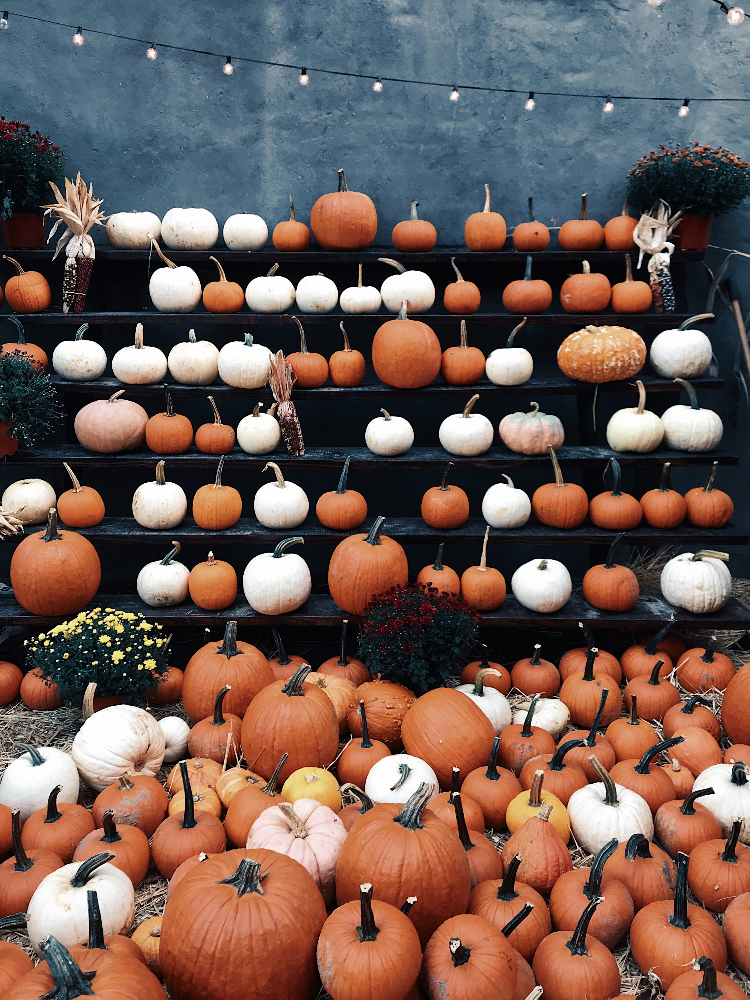
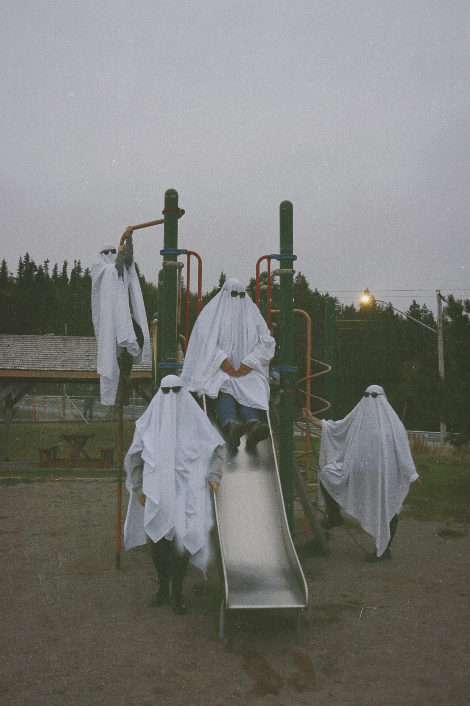
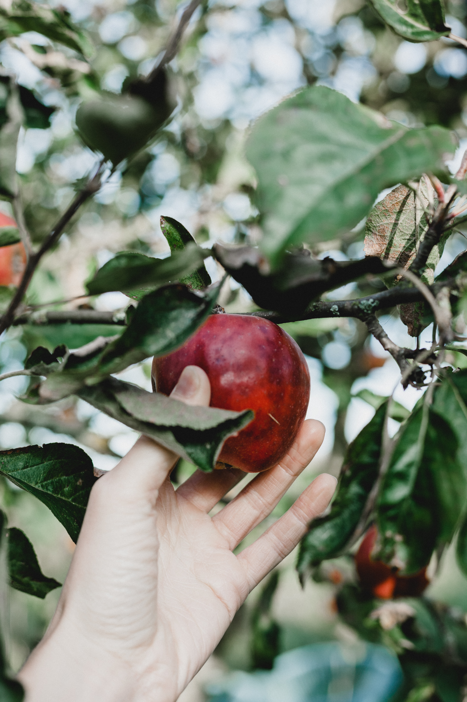
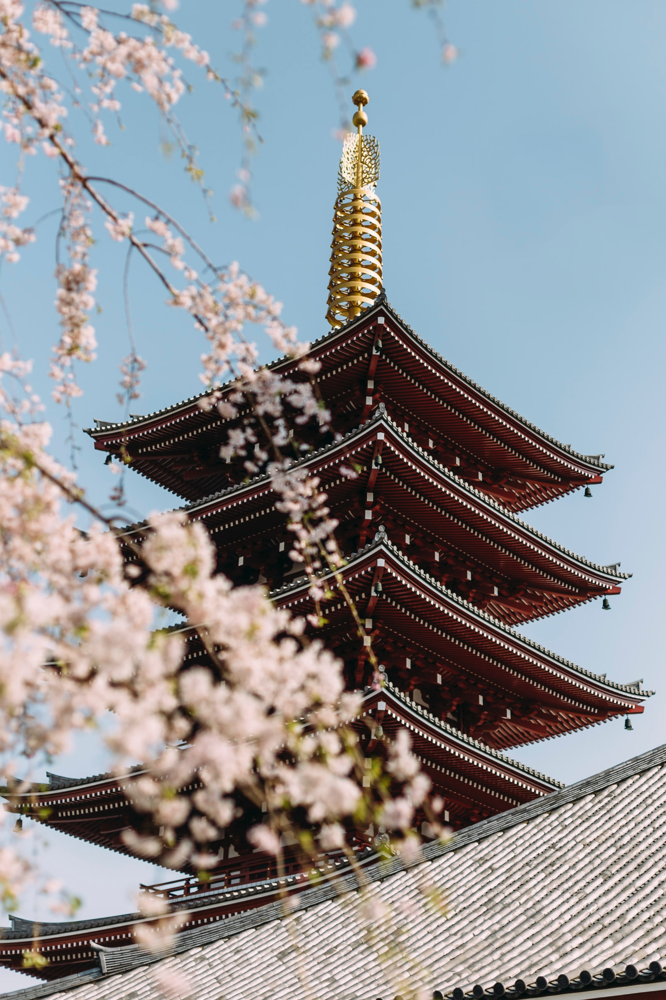
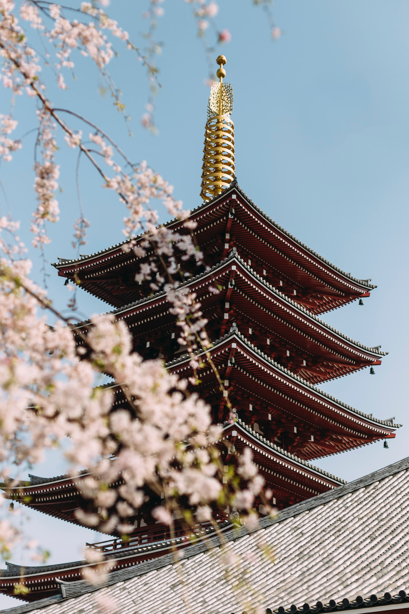
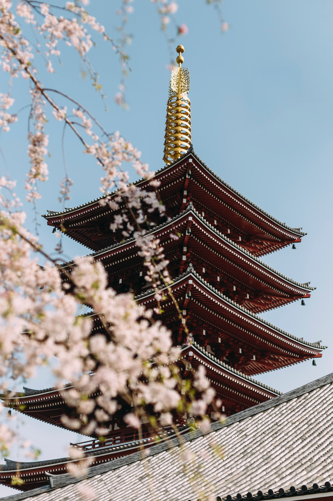

Autumn Adventures

Embark on extraordinary autumn adventures with Nomad's Quest. As the air turns crisp and nature transforms, our autumn experiences offer a captivating journey into the heart of the season. From leaf-peeping drives through scenic landscapes to cozy evenings by the bonfire, autumn welcomes you with warm hues and a sense of wonder.
Top Autumn Activities
- Fall Foliage Tours
- Apple Picking in Orchards
- Hot Springs Relaxation
- Photography in National Parks
- Fall Food and Wine Festivals
Must-Visit Autumn Destinations
- Smoky Mountains, USA
- Napa Valley, California
- Black Forest, Germany
- Canadian Rockies, Canada
- Shirakawa-go, Japan
"Life starts all over again when it gets crisp in the fall." - F. Scott Fitzgerald
"Autumn is a second spring when every leaf is a flower." - Albert Camus
Autumn Adventure Photos




 

